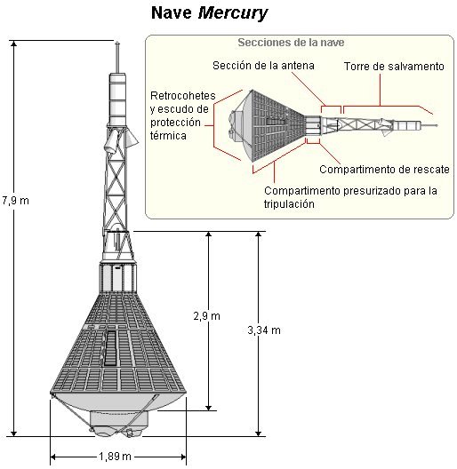

El Programa Mercury fue el primer programa espacial tripulado de los Estados Unidos, desarrollado entre 1961 y 1963 en el marco de la carrera espacial. Los inicios del proyecto se remontan al 7 de octubre de 1958, un año y tres días después de que la Unión Soviética pusiera en órbita alrededor de la Tierra al Sputnik 1, el primer satélite en el espacio. Al grupo de astronautas seleccionados por la NASA para las misiones del programa se les conocía como «Mercury Seven» y los pilotos asignaron a sus naves un nombre seguido de un 7.
El proyecto Mercury fue la respuesta de la NASA ante el liderazgo de ese momento de la Unión Soviética, enfrentada a Estados Unidos durante la Guerra Fría. Durante el programa Mercury, los ingenieros estadounidenses se vieron presionados ante los desafíos que implicaban la construcción de una nave segura que permitiera a un astronauta llegar hasta la órbita terrestre sin ser destruido por las enormes aceleraciones que ello implicaba. Otra fuente de preocupaciones eran las situaciones extremas propias del ambiente espacial: el vacío, las bruscas fluctuaciones de temperatura y la recién descubierta radiación espacial. Todo esto se complicaba más si cabe por la necesidad de realizar una reentrada a la atmósfera a alta velocidad y proteger al astronauta de las altas temperaturas de reentrada mediante el uso de escudos de protección térmica.
El resultado fue la creación de un vehículo de forma balística sin alas que haría su reentrada a la atmósfera protegido de un escudo térmico que se quemaría durante esta etapa. Mercury fue diseñado por Max Faget, y fue más versátil y con instrumentos más avanzados que su rival soviética Vostok. Las cápsulas Mercury utilizaron dos tipos de cohetes lanzadores (o boosters, en inglés). Los primeros vuelos suborbitales fueron lanzados por cohetes Redstone diseñados por el equipo de Wernher von Braun en Huntsville, Alabama. Para los vuelos orbitales, las cápsulas fueron lanzadas con los Atlas-D, unos cohetes modificados a partir de un misil balístico. Su cubierta de acero era muy delgada para ahorrar peso, por lo que la estabilidad estructural se la proporcionaba la presión del combustible interior (cuando estaba vacío debía ser presurizado con gas para evitar el colapso del lanzador). Este mismo problema lo tendría la siguiente familia de lanzadores para el programa Gemini: los Titan II.
